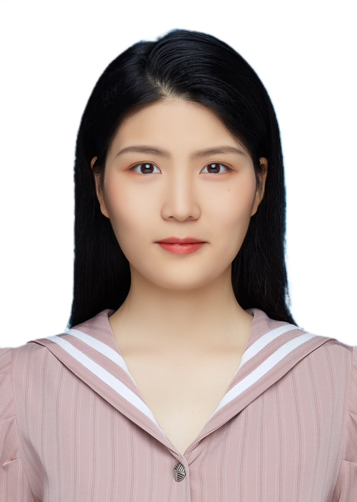

|
 |
Qian JINQian Jin, Ph.D. Student |
I am a Ph.D. candidate at the College of Integrated Circuits, Zhejiang University, under the co-supervision of Prof. Cheng Zhuo and Prof. Qi Sun since Fall 2022. Prior to that, I received my B.Eng. in Electronic Science and Technology from Wuhan University of Technology.
Machine Learning in EDA
Large Language Models (LLMs)
Computational lithography
[C10] Qian Jin, Yumeng Liu, Bohao Li, et al., “Beyond Binary: Physics-guided inverse design of ternary phase-shifting masks”, Design, Automation and Test in Europe Conference (DATE), 2027.
[C9] Yumeng Liu, Qian Jin, Xiaotian Qiu, Qi Sun, Cheng Zhuo, ‘‘Mask-Guided Diffusion with Process-Aware Metric Optimization for Long-Tailed Wafer Defect Analysis’’, ACM/IEEE Design Automation Conference (DAC), Long Beach, USA, Jul. 26-29, 2026.
[C8] Xiaoyan Luo, Yumeng Liu, Qian Jin, Qi Sun, Cheng Zhuo, ‘‘FreqSEM: Frequency-Aware High-Precision Contour Extraction for Lithographic SEM Images’’, ACM/IEEE Design Automation Conference (DAC), Long Beach, USA, Jul. 26-29, 2026.
[C7] Qian Jin, Yumeng Liu, Yuqi Jiang, Qi Sun, Cheng Zhuo, “Unitho: A Unified Multi-Task Framework for Computational Lithography”, ACM/IEEE International Conference on Computer-Aided Design (ICCAD), Munich, Oct. 26–30, 2025. (Invited Paper)
[C6] Yuqi Jiang, Qian Jin, Xudong Lu, Jinyuan Deng, Hao Geng, Hanming Wu, Qi Sun, Cheng Zhuo, ‘‘FabThink: A Wafer Analysis Multimodal LLM via Chain-of-Thought-Driven Retrieval Augmentation’’, IEEE/ACM International Conference on Computer-Aided Design (ICCAD), Munich, Oct. 26–30, 2025.
[C5] Qian Jin, Yuqi Jiang, Xudong Lu, Yumeng Liu, Yining Chen, Dawei Gao, Qi Sun, Cheng Zhuo, “SEM-CLIP: Precise Few-Shot Learning for Nanoscale Defect Detection in Scanning Electron Microscope Image”, ACM/IEEE International Conference on Computer-Aided Design (ICCAD), New Jersey, Oct. 27–31, 2024.
[C4] Yuqi Jiang, Xudong Lu, Qian Jin, Qi Sun, Hanming Wu, Cheng Zhuo, “FabGPT: An Efficient Large Multimodal Model for Complex Wafer Defect Knowledge Queries”, ACM/IEEE International Conference on Computer-Aided Design (ICCAD), New Jersey, Oct. 27–31, 2024.
[C3] Yuqi Jiang, Qian Jin, Xudong Lu, Qi Sun, Cheng Zhuo,‘‘FabSage: A Large Multimodal Model for IC Defect Detection, Analysis, and Knowledge Querying ’’, 1st IEEE International Workshop on LLM-Aided Design (LAD), San Jose, CA, June 28-29, 2024.
[C2] Qian Jin, Yibo Qiao, Yining Chen, Cheng Zhuo, Qi Sun, “A SelectiveNet-Based Method for Defect Classification in Semiconductor Manufacturing”, Conference of Science and Technology for Integrated Circuits (CSTIC), 2024.
[C1] Yibo Qiao, Weiping Xie, Shunyuan Lou, Qian Jin, Lichao Zeng, Yining Chen, Qi Sun, Cheng Zhuo, “Minimizing Labeling, Maximizing Performance: A Novel Approach to Nanoscale Scanning Electron Microscope (SEM) Defect Segmentation”, ACM/IEEE Design Automation Conference (DAC), San Francisco, Jun. 23–27, 2024.
[J7] Qi Sun, Yumeng Liu, Zimu Li, Qian Jin, et al., “Unitho 2.0: A unified multi-task framework for computational lithography”, IEEE Transactions on Computer-Aided Design of Integrated Circuits and Systems (TCAD), 2026.
[J6] Qi Sun, Jinyuan Deng, Qian Jin, Yu Li, Zheyu Yan, Dawei Gao, Shisheng Xiong, Zhenhua Wu, Cheng Zhuo, Ningsheng Xu, Hanming Wu, ‘‘Large Models for Integrated Circuit: Driving Leapfrogging Advances in IC Manufacturing Technologies’’, SCIENTIA SINICA Informationis, 2026, 2026-05-12.
[J5] Qingsong Peng, Qian Jin, Yu Li, Xu He, Zheyu Yan, Qi Sun, Cheng Zhuo, ‘‘Efficient Two-Stage Clustering of Large-Scale Layout Patterns with Trunk Topology and Progressive Relocation’’, accepted by IEEE Transactions on Computer-Aided Design of Integrated Circuits and Systems (TCAD).
[J4] Qian Jin, Yuqi Jiang, Yumeng Liu, Xudong Lu, Yining Chen, Dawei Gao, Qi Sun, Cheng Zhuo#, ‘‘SEM-CLIP 2.0: Precise Zero-/Few-Shot Learning for Nanoscale Defect Detection in SEM Image’’, accepted by IEEE Transactions on Computer-Aided Design of Integrated Circuits and Systems (TCAD).
[J3] Yuqi Jiang, Qian Jin, Xudong Lu, Xiangyue Lyu, Zhuolun He, Xunzhao Yin, Yali Fu, Dawei Gao, Bei Yu, Qi Sun, Hanming Wu, Cheng Zhuo, ‘‘FabGPT: An Efficient Large Multimodal Model for Complex Wafer Defect Knowledge Queries’’, accepted by IEEE Transactions on Computer-Aided Design of Integrated Circuits and Systems (TCAD).
[J2] Yibo Qiao, Weiping Xie, Shunyuan Lou, Qian Jin, Lichao Zeng, Yining Chen, Qi Sun, Cheng Zhuo, ‘‘A Hybrid Weakly Supervised Approach for enhanced High-Precision SEM Defect Segmentation in Nanoscale Semiconductor Manufacturing’’, ACM Transactions on Design Automation of Electronic Systems (TODAES), vol. 31, no. 35, pp. 1-22, Jan. 2026.
[J1] Qian Jin, Qingsong Peng, Yumeng Liu, Xiaotian Qiu, Qi Sun, “Recent advances in computational lithography technology”, Moore and More (MAM), 2025.
National Scholarship, ZJU, 2025
Third Prize in China postgraduate IC innovation competition, China, 2024
Jevarts Scholarship, ZJU, 2023
Excellent Graduate Student, ZJU, 2023
Qiushi PhD Fellowship, ZJU, 2022
National Scholarship, WUT, 2019, 2021